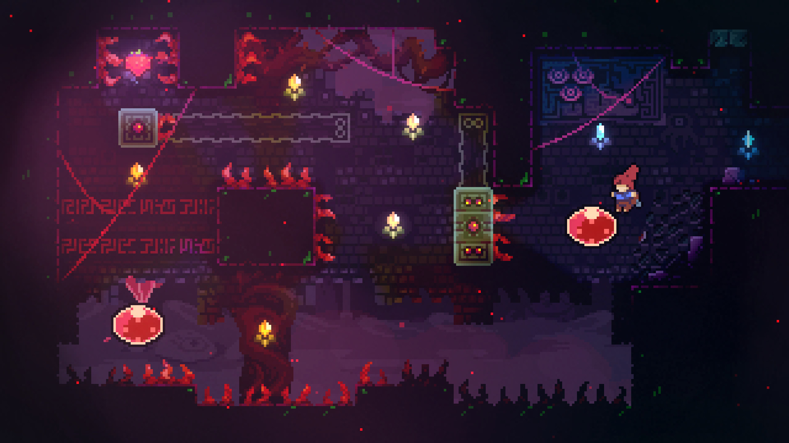

context
Context is the simulated space and its effect on the playable character and player. The size of the space in relation to the movement speed of the playable character forms the overall feel of navigating the space. The way you can interact with the environment then modifies this feel further. If the character doesn’t react to the space at all, the space would be meaningless to the player. The polish of the space could still reinforce the feel, but the abilities of the player character would be meaningless, as the space wouldn’t require utilizing them. It doesn’t matter if the player character can jump if the environment is a flat plane. The character’s abilities have no context. When an environment makes the player utilize their abilities, context is created.
If an environment is very vast and the player can move around without formidable obstacles, a space can feel relaxing and the player can explore the area freely. Depending on the agility of the character, the feel of the space can vary further. If the player character’s movement speed is slow, but is still agile, moving around is easy, but exploring will take more time. The space will probably feel a bit larger in relation due to the slow movement speed. The player’s attention will also be more focused to the surrounding environment instead of the gameplay obstacles as a result. Vice versa, if the character glided around the environment with blazing speed, the space would of course feel smaller. An interesting point to note is that the game will in most cases become a bit harder as the overall pace increases. The player will also perceive the game to be harder because obstacles will be introduced with less time in between, changing the overall feel of the space to be more dangerous. If we kept the movement speed of the character intact and made the environment smaller, the character would start feeling clumsier, bumping into walls due to the relatively high movement speed.
How does the scale of the environment compared to the character affect the feel of the space?
The quality of the interaction with the environment is very impactful. If instead of stopping when hitting a wall the player character exploded, the environment’s feel would be completely different without changing any of the geometry. If failing has large repercussions, even the simplest obstacles will feel a lot more dangerous. Also, the overall amount of dangerous space in relation to the amount of safe space will alter the perceived difficulty of the space. By increasing the amount of safe space, an environment can contain the exact same amount of challenges, but feel less threatening.
rules
The rules of the game are just a bunch of variables that have relationships to other variables. Together they form the rules of the game. A variable could be the amount of damage an enemy inflicts. If the player character has a hundred hit points and the enemy does a single point of damage on a hit, it will feel mostly harmless. If we scale up the damage to ten points, the enemy will feel more threatening. As a result, all areas that contain that enemy will be more threatening.
Rules can also be thought of as game mechanics. The more connections rules have to each other, the more complex the mechanics and the systems they create become. If we added a mechanic to the previous example where the player could regenerate lost hit points, this will again alter the feel of the enemy, as both changes to rules interact with hit points. The more high level a mechanic is, the more widely it will affect the feel of the game. Regenerating hit points would affect all combat ingame.
Another example that Swink uses is a simple coin. By itself it’s useless, but when connected to other parts of the game it has meaning. By tying coins to level progression, the player will want to collect the coins, altering the feel of the coins. By making this change, levels that contain coins will have their feel altered. If the coins are placed in hard to reach places, the level will become harder.
Coins will also form the base for player motivation in the long run if they’re tied to level progression in this way. A player’s innate goal is to beat the game. To beat the game, they will have to progress from one level to another. To progress to the next level, they will have to collect coins. With these few connections, coins have become an integral part of the rules of the game and the player has a long lasting motivation to collect coins. Improving the feel of the game can sometimes be achieved by making the things the player does feel more worth doing. When these rules are tied to the actual mechanics of the game, like coins placed in hard to reach areas in a platformer, instead of arbitrary rules like time limits, the rules create motivation instead of being there simply to gate the player’s progress.
next time...
We'll talk about two other metrics, polish and metaphor. Yes, the word polish is used a lot, I know.